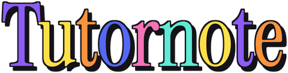

Welcome back to
Tutornote
Tutornote is currently in beta.
Google and Apple sign-in open in your browser, where you're probably signed in already. You'll come straight back here.
or
No account yet? Open the invite link in your welcome email, or join the waitlist.
By logging in, you agree to our Terms of Service and Privacy Policy
New here? Join the waitlist
Forgot your password?
Finish signing in in your browser.
This window continues on its own.